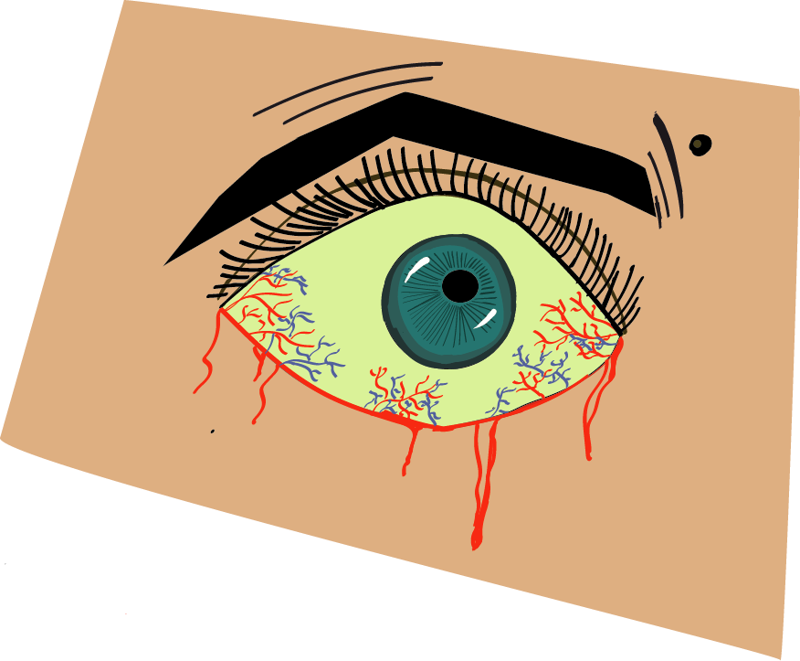

When I was doing the eye, i was thinking about how excited I was about Frankenstein being released on Netflix. Frankenstein is one of my favorite books, and I am happy that it was a required reading in High School, then again in a course I took in the spring of 2025. I love the book because it shows that villains aren’t born. No one is born evil, they are made. It shows the dangers of playing God, So I was thinking of the exhaustion Victor had gone through after releasing the mistake he had made in creating the creature. But in reality, Victor was the monster all along, because he abandoned his creation. When he realized his loved ones died at the hands of his creation he went mad. That's what I was thinking when I did this design.